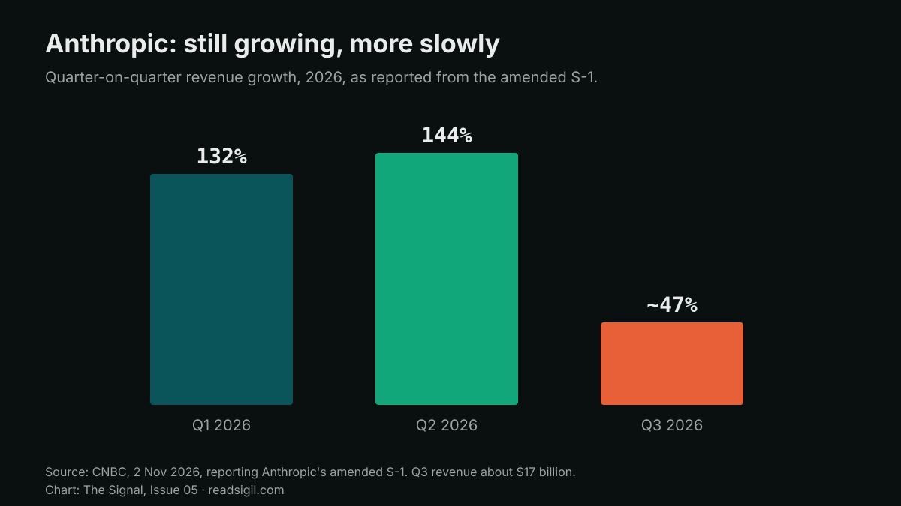

The Signal · Issue 05 · Cover story · Frontier Models
Anthropic's prospectus now says its AI may soon speed up its own progress
The amended S-1 added third-quarter numbers: about $17 billion of revenue, slower growth and $895.4 billion of commitments. The bigger change is a risk factor. Anthropic says it may soon meet its own threshold for AI-accelerated research, and that it might only notice afterwards.
Facts are attributed and linked to their sources. The analysis and opinions are the author's own.
What it is
On 2 November Anthropic filed an amended S-1 with the US Securities and Exchange Commission, adding its third-quarter results ahead of a roadshow expected next week. CNBC reported revenue of $33.24 billion for the nine months to 30 September, up about 1,200% on a year earlier. Third-quarter revenue was about $17 billion. Growth slowed to about 47% quarter on quarter, from 144% in the second quarter and 132% in the first. The nine-month net loss was $104 billion, mostly from changes in the fair value of convertible notes and derivatives rather than from operations.
Reuters added detail on the operating line. Anthropic made a third-quarter operating loss of $567 million, after operating income of $974 million in the second quarter. More than 11,900 customers now generate over $100,000 a year in revenue, up from more than 1,500 at the end of 2025. Reuters also reported that some investors are weighing a valuation of about $1.5 trillion, down from about $2 trillion discussed earlier.

The filing shows compute and infrastructure expense for the nine months up $14.4 billion, or 329%, on a year earlier. It puts aggregate committed spend at about $895.4 billion, "substantially all of which is related to compute and infrastructure". About $447.5 billion falls before the end of 2030 and about $69.8 billion is due in the 12 months after 30 September. Anthropic also warns that "certain of our compute providers and infrastructure partners depend on third-party financing or credit support to acquire chips and develop capacity". If that financing becomes unavailable or more costly, it says, contracted capacity "may be delayed, repriced, reduced, or not delivered".
The risk factor
TechCrunch picked out the passage most readers will skip. Anthropic writes that it has "in the past not identified, and may in the future not identify, a significant acceleration in our rate of development until after it has occurred." It goes on: "our internal estimates and our expectations regarding future models, rather than our current models, indicate that we may imminently meet our Responsible Scaling Policy's definition of 'dramatically accelerated progress attributable to AI.'" It has not designated any current model as exceeding that threshold, and it says it will release further reports under its policy.
Elsewhere in the filing Anthropic says it does "not anticipate being able to safely use Claude to fully autonomously design and build successive generations of frontier models without meaningful human supervision or understanding", and that it is "considering updates to our Responsible Scaling Policy to keep humans in control of frontier model development".
Why it matters
In my view the revenue line will get the headlines, but the risk factor is the unusual disclosure. A company is telling investors, in a document that carries legal liability, that its own measurement of progress may lag the progress itself. TechCrunch makes the fair point that an S-1 is also a sales document. Even so, a vendor that says it may only see a speed-up in hindsight is making a statement about change risk, and every firm that runs on that vendor's models inherits it.
The most important line in the filing is not a dollar figure. It is the admission that a speed-up might only be visible afterwards.
For a bank or insurer, I would treat this the way a model-risk team treats any supplier whose product can change faster than it can be validated. That means pinning model versions in contracts, asking for notice before a version is retired, and asking to see the policy reports Anthropic says it will publish. The financing passage matters too. Last week this magazine looked at how credit analysts are starting to price the AI build-out. Here the issuer itself says part of its capacity depends on other companies' ability to borrow.
What I'd watch
- Whether Anthropic publishes its policy report on the AI research threshold before the roadshow, and what it measures.
- The text of any Responsible Scaling Policy update on keeping humans in control, and whether it binds release decisions.
- Fourth-quarter growth against the $69.8 billion of commitments due within a year.
Sources
- Anthropic, PBC: Amendment No. 1 to Form S-1 US Securities and Exchange Commission, 2 Nov 2026.
- Anthropic reports $17 billion in Q3 revenue, purchase commitments of $895.4 billion in revised S-1 CNBC, 2 Nov 2026.
- Anthropic's quarterly loss shrinks, revenue jumps ahead of blockbuster IPO Reuters via Investing.com, 2 Nov 2026.
- Anthropic warns that it's very close to RSI capability, aka self-building AI TechCrunch, 2 Nov 2026.